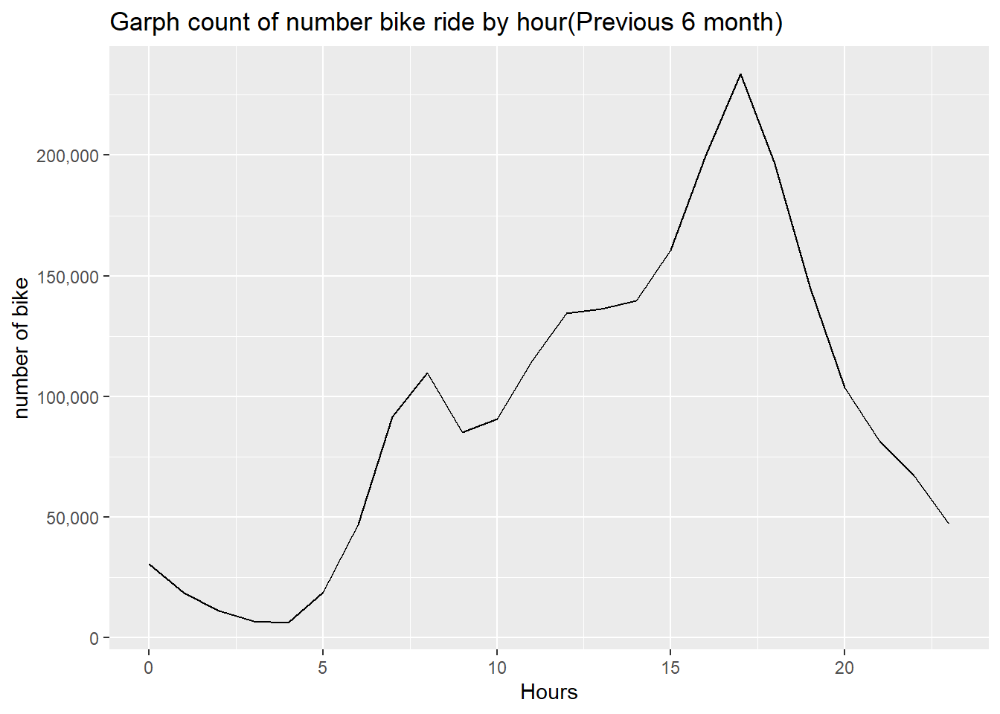

rm(list=ls())options(repos = "http://cran.rstudio.com/")
install.packages("tidyverse")## Installing package into 'C:/Users/USER/AppData/Local/R/win-library/4.2'
## (as 'lib' is unspecified)## package 'tidyverse' successfully unpacked and MD5 sums checked
##
## The downloaded binary packages are in
## C:\Users\USER\AppData\Local\Temp\RtmpcbEn7s\downloaded_packagesinstall.packages("lubridate")## Installing package into 'C:/Users/USER/AppData/Local/R/win-library/4.2'
## (as 'lib' is unspecified)## package 'lubridate' successfully unpacked and MD5 sums checked## Warning: cannot remove prior installation of package 'lubridate'## Warning in file.copy(savedcopy, lib, recursive = TRUE): problem copying
## C:\Users\USER\AppData\Local\R\win-library\4.2\00LOCK\lubridate\libs\x64\lubridate.dll
## to
## C:\Users\USER\AppData\Local\R\win-library\4.2\lubridate\libs\x64\lubridate.dll:
## Permission denied## Warning: restored 'lubridate'##
## The downloaded binary packages are in
## C:\Users\USER\AppData\Local\Temp\RtmpcbEn7s\downloaded_packagesinstall.packages("janitor")## Installing package into 'C:/Users/USER/AppData/Local/R/win-library/4.2'
## (as 'lib' is unspecified)## package 'janitor' successfully unpacked and MD5 sums checked
##
## The downloaded binary packages are in
## C:\Users\USER\AppData\Local\Temp\RtmpcbEn7s\downloaded_packageslibrary(tidyverse)## ── Attaching packages ─────────────────────────────────────── tidyverse 1.3.2 ──
## ✔ ggplot2 3.4.1 ✔ purrr 1.0.1
## ✔ tibble 3.1.8 ✔ dplyr 1.1.0
## ✔ tidyr 1.3.0 ✔ stringr 1.5.0
## ✔ readr 2.1.4 ✔ forcats 1.0.0
## ── Conflicts ────────────────────────────────────────── tidyverse_conflicts() ──
## ✖ dplyr::filter() masks stats::filter()
## ✖ dplyr::lag() masks stats::lag()library(lubridate)##
## Attaching package: 'lubridate'
##
## The following objects are masked from 'package:base':
##
## date, intersect, setdiff, unionlibrary(janitor)##
## Attaching package: 'janitor'
##
## The following objects are masked from 'package:stats':
##
## chisq.test, fisher.testlibrary(scales)##
## Attaching package: 'scales'
##
## The following object is masked from 'package:purrr':
##
## discard
##
## The following object is masked from 'package:readr':
##
## col_factorlibrary(ggplot2)df1<- read.csv("C:\\Users\\USER\\Documents\\Data\\202201-divvy-tripdata.csv")
df2<- read.csv("C:\\Users\\USER\\Documents\\Data\\202202-divvy-tripdata.csv")
df3<- read.csv("C:\\Users\\USER\\Documents\\Data\\202203-divvy-tripdata.csv")
df4<- read.csv("C:\\Users\\USER\\Documents\\Data\\202204-divvy-tripdata.csv")
df5<- read.csv("C:\\Users\\USER\\Documents\\Data\\202205-divvy-tripdata.csv")
df6<- read.csv("C:\\Users\\USER\\Documents\\Data\\202206-divvy-tripdata.csv")bike_rides <- rbind(df1,df2,df3,df4,df5,df6)
dim(bike_rides)## [1] 2278732 13bike_rides <- janitor::remove_empty(bike_rides,which = c("cols"))
bike_rides <- janitor::remove_empty(bike_rides,which = c("rows"))
dim(bike_rides)## [1] 2278732 13bike_rides$Ymd <- as.Date(bike_rides$started_at)
bike_rides$started_at <- lubridate::ymd_hms(bike_rides$started_at)
bike_rides$ended_at <- lubridate::ymd_hms(bike_rides$ended_at)bike_rides$start_hour <- lubridate::hour(bike_rides$started_at)
bike_rides$end_hour <- lubridate::hour(bike_rides$ended_at)bike_rides$Hours <- difftime(bike_rides$ended_at, bike_rides$started_at, units = "hours")
bike_rides$mins <- difftime(bike_rides$ended_at,bike_rides$started_at,units = "mins")df <- bike_rides %>% filter(Hours>0)
dim(df)## [1] 2278559 18df <- df %>% drop_na()
dim(df)## [1] 2276036 18df <- df %>% select(-ride_id,-end_station_id,-end_station_name)bike_rides %>% count(start_hour,sort = T) %>% ggplot() +
geom_line(aes(x=start_hour,y=n))+
scale_y_continuous(labels = comma) +
labs(title ="Garph count of number bike ride by hour(Previous 6 month) ", x = "Hours",y = "number of bike")